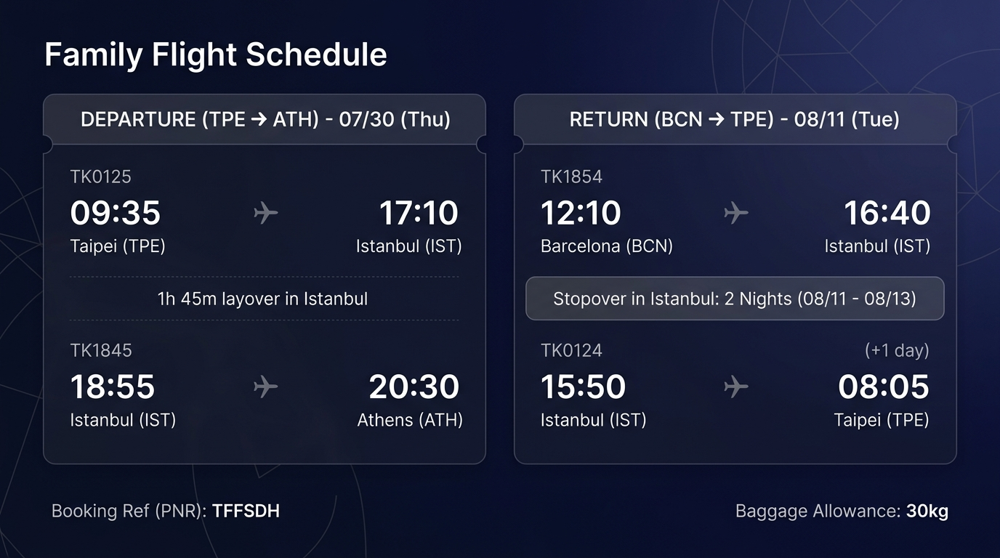

TPE
TK 0125
IST
可切換 English 給官員閱讀 · 請出示護照與本頁
旅遊性質：家庭觀光（含地中海郵輪）
全程已訂機票、飯店與部分門票；返台班機 08/13 IST→TPE，08/14 抵台。
2026/07/30（四）— 08/14（五）· 16 天 · 6 人
€60.00
ibis Styles 尾款（已預付 €537）
€138.60
城市稅 City tax（約 TWD 5,094）
資料同步自家族行程 · 含第一次郵輪指南

🇬🇷 Athens · 30 Jul–01 Aug · 2 晚 · 3 房
08/01 雅典登船 — 08/08 巴塞隆納下船
🇪🇸 Barcelona · 08–11 Aug · 3 nights · 3 twins
伊斯坦堡 · 08/11–08/13 · Stopover 免費 · 含早餐
家裡 → 機場。09:35 TK 0125 → 17:10 IST。
Home → airport. 09:35 TK 0125 → 17:10 IST.
18:55 TK 1845 → 20:30 ATH。
18:55 TK 1845 → 20:30 ATH.
包車赴 ibis Styles（現場付 €60）。
Private transfer to ibis Styles (pay €60 at hotel).
古阿哥拉 → 普拉卡 → 阿納菲奧提卡 → 彈性蒙納斯提拉奇。
Ancient Agora → Plaka → Anafiotika → optional Monastiraki.
衛城博物館 → 衛城 17:00–18:00（已購票）。
Acropolis Museum → Acropolis 17:00–18:00 (tickets booked).
彈性：利卡維多斯山丘（計程車到纜車站）。
Optional: Lycabettus Hill (taxi to funicular).
帕納辛奈科 → 憲法廣場 → 中央市場。太熱可提早往港口。
Panathenaic Stadium → Syntagma → Central Market. Head to port early if hot.
Terminal B · Gate E12 · 行李吊牌 · 貴重物隨身 · 可逛 Lotus Spa。
Terminal B · Gate E12 · luggage tags · valuables carry-on · optional Lotus Spa tour.
17:00 主餐廳 7F → 19:00 啟航 → 船上秀。
17:00 MDR Deck 7 → sail-away 19:00 → shows.
纜車上 Fira（€10）→ 包車 Oia。接駁船號牌要早領。
Cable car to Fira (€10) → private car to Oia. Collect tender tickets early.
Fira 景點 · 最晚 16:30 排纜車下山。
Fira sights · queue cable car by 16:30 latest.
19:00 啟航 · 日落約 20:15–20:30。
Sail 19:00 · sunset ~20:15–20:30.
船上活動、主餐廳、60 週年派對、日落秀。
Ship activities, MDR dining, anniversary party, sunset.
接駁 → 計程車往巴爾老城（千年橄欖樹）。
Shuttle → taxi to Stari Bar (old olive tree).
海濱、教堂、超市 · 18:00 啟航。
Waterfront, church, supermarket · sail 18:00.
舊要塞 · Papagiorgis 冰淇淋 · 聖斯皮里宗教堂（帶泳裝）。
Old Fortress · Papagiorgis gelato · St. Spyridon (bring swimwear).
Imabari 餐廳／海灘 · 15:00 會合 · 16:00 啟航。
Imabari lunch/beach · meetup 15:00 · sail 16:00.
火車約 40 分（左側看海）→ 劇場 → Bam Bar。
Train ~40 min (left side sea views) → Greek theatre → Bam Bar.
古鎮散步 · 彈性 Castelmola · 包車回港。
Town stroll · optional Castelmola · private car back to port.
船上休息、打包預備、晚上主餐廳。
Relax onboard, start packing, evening MDR.
約 09:00 下船 → 飯店寄行李。
Disembark ~09:00 → hotel luggage drop.
巴特略（待購）→ 米拉 → 聖家堂 16:30。
Casa Batlló (to buy) → La Pedrera exterior → Sagrada 16:30.
聖家堂拍照 · Tapas Vinitus／El Nacional。
Sagrada photos · tapas at Vinitus / El Nacional.
音樂宮 10:01 中文導覽 → 甜點。
Palau 10:01 Chinese tour → pastry stop.
舊城區 · 主教堂（注意週日開放時間）。
Gothic Quarter · Cathedral (check Sunday hours).
彈性購物／英國宮百貨。
Optional shopping / El Corte Inglés.
凱旋門／城堡公園 → 法國車站 → 聖卡特琳娜市場。
Arc de Triomf / Ciutadella → Estació de França → Santa Caterina Market.
海洋聖母聖殿 → 哥倫布 → Alcampo 名產。
Santa Maria del Mar → Columbus monument → groceries/souvenirs.
退房赴機場。
Checkout → BCN airport.
TK 1854 · IST 建議包車赴 Eresin Topkapi。
TK 1854 · pre-book transfer to Eresin Topkapi.
藍色清真寺 → 競技場 → Seven Hills。
Blue Mosque → Hippodrome → Seven Hills terrace.
聖索菲亞 → 狄奧多西地下宮殿替代。
Hagia Sophia → Theodosius Cistern alternative.
香料市集 · 彈性海峽遊船。
Spice Bazaar · optional Bosphorus cruise.
同 A 的清真寺與競技場。
Same morning as Plan A.
地下水宮殿夜間音樂會（約 €70–75）。
Basilica Cistern night concert (~€70–75).
彈性加拉達 · 11:50 前退房。
Optional Galata area · checkout by 11:50.
15:50 TK 0124。
15:50 TK 0124 to Taipei.
08:05 桃園 T2 → 回家。
08:05 Taoyuan T2 → home.
31 Jul 17:00–18:00 · €30 × 6
08 Aug 16:30 · passport required · €26 × 6
09 Aug 10:01 Chinese tour · Gen×3 + Senior×3
08 Aug ~13:30
12 Aug afternoon · buy online
| 姓名 | 票號 | 安全碼 |
|---|---|---|
| YIJYUN CHEN | A-2448655 | 96401065 |
| HSIA-TING YEH | A-2448654 | 16308114 |
| JUIYUN CHANG | A-2448651 | 26583828 |
| PEICHIN YEH | A-2448656 | 42916745 |
| MINGZHI CHEN | A-2448652 | 37143592 |
| LICAI LAN | A-2448653 | 59440890 |
整理自公主郵輪官方 OceanReady／MedallionClass 與常見新手經驗，供行前與船上參考。
市區輕行程；若太熱可提早往派里厄斯。先吃點東西，船上雖有午餐但人多。
Light Athens sights; head to Piraeus early if hot. Eat a little — ship lunch gets crowded.
抵達 Terminal B / Gate E12。流程通常：大件行李放行（貼吊牌）→ 安檢 → 核對證件／拍照 → 領取或啟用 Medallion → 登船。
Arrive Terminal B / Gate E12. Typical flow: bag drop → security → ID/photo → Medallion pickup/activation → board.
先找艙房（可能尚未能進房）→ 主餐廳或自助午餐 → 逛公共區（Piazza／The Dome 方向）→ 看 App 上的安全演練／Muster時間與地點，務必參加。
Find your stateroom (may not open yet) → lunch → explore public areas → complete the required muster / safety drill in the app/onboard — mandatory.
你們已訂主餐廳 7F 自助／固定時段：準時入座，熟悉服務生與菜單。
Your reserved MDR Deck 7 time: arrive on time; meet your waitstaff.
啟航 Sail-away：到高甲板或船尾拍照。大件行李通常傍晚前後陸續送達，再慢慢開箱。
Sail-away: upper decks/aft for photos. Large luggage often arrives by early evening — unpack then.
看秀、熟悉 App 點餐／找人功能、設定次日鬧鐘（港日要早）。
Show, explore Medallion app features, set alarm for early port days.
看航海日誌／App：到離港時間、All Aboard 登船截止、是否接駁船（Tender）。準備護照影本、現金歐元、帽子防曬、行動電源。
Check Patter/app: arrival/departure, all-aboard time, tender or dock. Prep passport copy, EUR cash, sun protection, power bank.
港日建議早早餐。聖托里尼等 Tender 港：盡早領接駁序號，越早下船排隊纜車越短。
Breakfast early. On tender ports (e.g. Santorini): get tender tickets early to beat cable-car queues.
自由行請自己盯時間；船不會為個別旅客晚開。建議回船時間比 All Aboard 再早 60–90 分鐘（塞車／纜車）。
Independent tours: the ship will not wait. Aim to return 60–90 minutes before all-aboard.
洗手、補水、小睡或泳池。離港可到甲板看港景。晚上秀與主餐廳照表操課。
Hydrate, rest, pool. Watch sail-out. Evening shows & MDR as scheduled.
按船上指示：大件是否要前一晚放走廊、行李吊牌顏色／時段。結清艙房帳。護照與隨身行李自己留著。
Follow luggage instructions (tags/color/time). Settle folio. Keep passport & carry-on with you.
吃完早餐後約 09:00 批次下船（可選較後批次較不趕）。在 Terminal D／E 行李廳提大件 → 包車赴飯店。
Breakfast, then disembark around 09:00 (later groups are calmer). Collect bags in terminal hall → transfer to hotel.
完整可勾選／可列印清單請到底部「待辦」分頁（與 Excel「出發前待辦」同步）。
Full printable checklist is under the To-do tab (synced with Excel sheet).
30 Jul – 14 Aug 2026 · 6 guests · TK PNR TFFSDH · Sun Princess
旅遊：家庭觀光（雅典 → 地中海郵輪 → 巴塞隆納 → 伊斯坦堡 Stopover → 台北）
Purpose: family tourism (Athens → cruise → Barcelona → Istanbul stopover → Taipei)